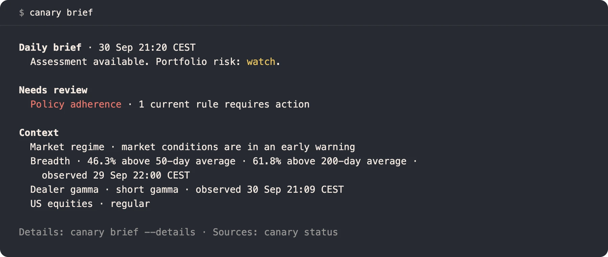
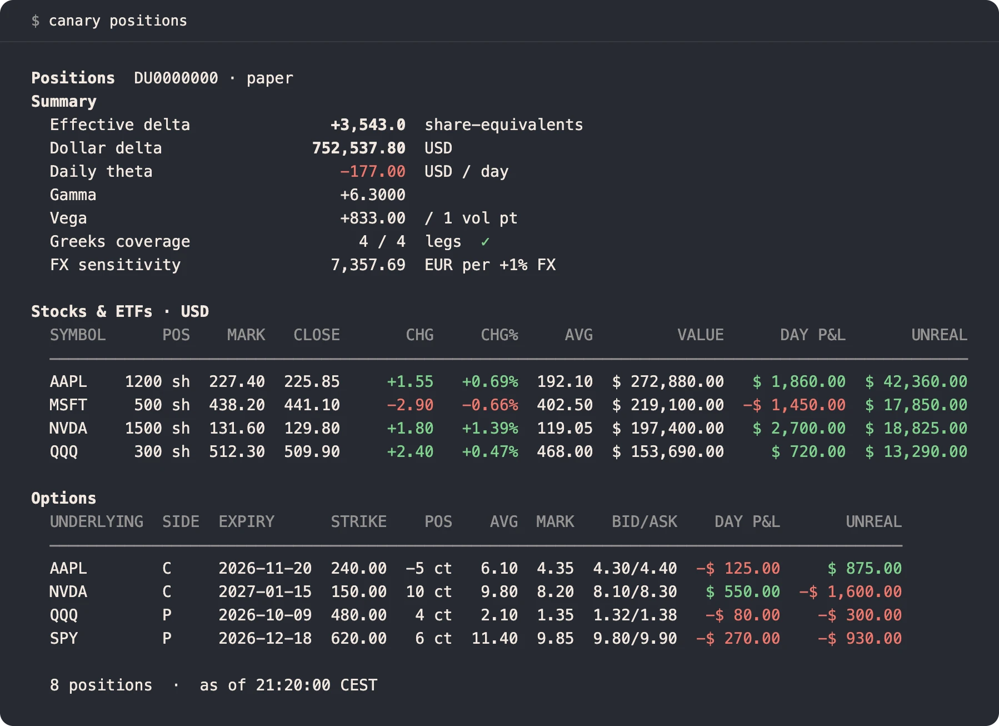
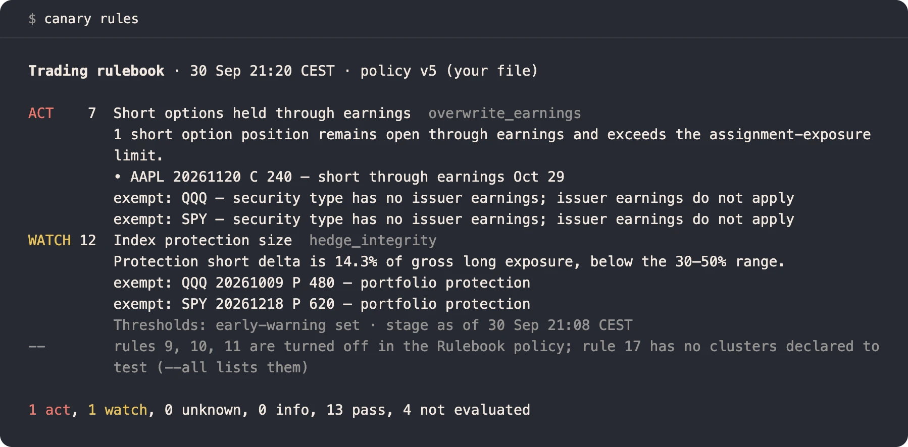

Your book, with its evidence
Positions, exposure and reconciliation against broker statements. Stale or missing data stays labelled, never filled in.
Open source · Go
A local risk desk for your broker account. It checks your book against your risk rules and drafts the protection they call for.
The open-source engine under Canary Desk. It runs with Interactive Brokers today, through IB Gateway or TWS; the broker layer is its own Go package.

canary brief, the morning read.Synthetic accountPositions, exposure and reconciliation against broker statements. Stale or missing data stays labelled, never filled in.
A rulebook checks the book every minute. When a rule trips, Canary drafts the stop, exit or budget cut it calls for.
The trading build sends what you confirm, and what you have pre-authorised by rule. Every order passes Canary’s checks.
MCP tools give Claude and other assistants the same evidence to reason over. The TWS protocol is spoken natively in Go, with no vendor SDK.
From the command line
Every figure names its source and its age. The same daemon answers the shell, your AI assistant and a paired phone.

canary positionsSynthetic account
canary rulesSynthetic accountFull features
Get started
Run IB Gateway 10.37+ or TWS on the same machine. You need an IBKR Pro account with TWS API access; IBKR Lite does not include it.
Claude Desktop install# Claude Code plugin
/plugin marketplace add osauer/canary
/plugin install canary@canary
# restart Claude Code or run /reload-plugins after install/update
# Shell, Cursor, Continue, Zed, generic MCP hosts
curl -fsSL https://raw.githubusercontent.com/osauer/canary/main/install.sh | sh
canary setup claude-desktop
# then ask:
# "How does my IBKR account look today?"Documentation
Canary Desk is the private workspace built on this engine. See Canary Desk.